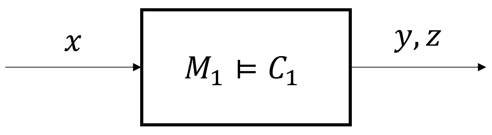

3. Assume-Guarantee (A/G) Contracts¶
3.1. What is an A/G Contract?¶
An assume-guarantee (A/G) contract \(C\) is a triple \((V,A,G)\) where \(V\) is the set of variables, \(A\) is the set of behaviors which a component (or system) expects from its environment, and \(G\) is the set of behaviors that the component promises given that the environment provides behaviors within the assumption set. We say \(M\) is an implementation of \(C\) by writing \(M \models C\).
A contract is in saturated form if it satisfies \(\overline{A} \subseteq G\) where \(\overline{A}\) is the complement of \(A\). An unsaturated contract \(C'=(V,A,G)\) can always be saturated to the equivalent contract \(C=(V,A,G')\) where \(G'=G \cup \overline{A}\).
An A/G contract \(C = (V,A,G)\) is compatible if there exists an environment behavior over the set of variables \(V\), i.e., \(A \neq \emptyset\), consistent if there exists a behavior satisfying the (saturated) guarantees, i.e., \(G \neq \emptyset\), and feasible if there exists a behavior that satisfies both the assumptions and the guarantees, i.e., \(A \cap G \neq \emptyset\).
Via refinement, we can reason about different abstraction layers in system design. A contract \(C_2 = (V,A_2,G_2)\) refines \(C_1 = (V,A_1,G_1)\) if and only if (1) \(A_1 \subseteq A_2\) and (2) \(G_2 \subseteq G_1\). We denote this relationship as \(C_2 \preceq C_1\). Intuitively, if a contract \(C_2\) refines another contract \(C_1\), then \(C_2\) can replace \(C_1\). For further details we refer to the monograph [ContractMono].
3.2. A/G Contracts in PyCASSE¶
3.2.1. Creating an A/G Contract¶
{kind=link}
Consider the component above. An STL contract \(C_1 = (V_1,A_1,G_1)\) where \(V_1 := \{ x, y, z \}\), \(A_1 := 5 \leq x \leq 9\), and \(G_1 := (2 \leq y) \land (z \leq 2)\) can be created as follows:
from pycasse import *
c1 = contract('c1') # Create a contract c1
c1.add_deter_vars(['x', 'y', 'z']) # Set a controlled variable
c1.set_assume('(5 <= x) & (x <= 9)') # Set assumptions of c1
c1.set_guaran('(2 <= y) & (z <= 2)') # Set guarantees of c1
{kind=link}
Using StSTL specifications, a contract \(C_1' = (V_1', A_1', G_1')\) where \(V_1' = U_1' \cup X_1'\), \(U_1' := \{ x, w_1, w_2 \}\), \(X_1' := \{ y \}\), \(A_1' := \mathbf{G}_{[0,3]}(5 \leq x)\), \(G_1' := \mathbf{G}_{[1,3]}(P\{ y-2w_1+3w_2 \leq 8 \} \geq 0.95)\), and \(\mathbf{w} = [w_1, w_2]^T \sim N([0,2]^T, [[1,0],[0,1]])\) can be created as follows:
c1_prime = contract('c1_prime') # Create a contract c1_prime
c1_prime.add_deter_vars(['x', 'y']) # Set deterministic variables
c1_prime.add_nondeter_vars(['w1', 'w2'], \
mean = [0, 2], cov = [[1**2, 0], [0, 1**2]]) # Set nondeterministic variables
c1_prime.set_assume('G[0,3] (5 <= x)') # Set assumptions of c1_prime
c1_prime.set_guaran('G[1,3] (P[0.95] (y - 2*w1 + 3*w2 <= 8))') # Set guarantees of c1_prime
Any contract in PyCASSE can be saturated and its information can be printed. For example, \(C_1\) and \(C_1'\) can be saturated and their information can be printed as follows:
c1.checkSat() # Saturate c1
c1.printInfo() # Print c1
c1_prime.checkSat() # Saturate c1_prime
c1_prime.printInfo() # Print c1_prime
Please note that in PyCASSE, contracts are automatically saturated whenever necessary.
3.2.2. Checking Compatibility, Consistency, and Feasibility¶
We can check compatibility, consistency, and feasiblity of the contract \(C_1\) and \(C_1'\). This includes when PyCASSE checks for compatibility, consistency, and feasiblity.
c1.checkCompat(print_sol=True) # Check compatibility of c1
c1.checkConsis(print_sol=True) # Check consistency of c1
c1.checkFeas(print_sol=True) # Check feasiblity of c1
c1_prime.checkCompat(print_sol=True) # Check compatibility of c1_prime
c1_prime.checkConsis(print_sol=True) # Check consistency of c1_prime
c1_prime.checkFeas(print_sol=True) # Check feasibility of c1_prime
3.2.3. Refinement¶
Let’s create two more contracts \(C_2\) and \(C_3\) and check their compatibility, consistency, and feasiblity:
c2 = contract('c2') # Create a contract c2
c2.add_deter_vars(['x', 'y']) # Set a controlled variable
c2.set_assume('(6 <= x) & (x <= 9)') # Set assumptions of c2
c2.set_guaran('3 <= y') # Set guarantees of c2
c2.checkSat() # Saturate c2
c2.printInfo() # Print information of c2
c2.checkCompat(print_sol=True) # Check compatibility of c2
c2.checkConsis(print_sol=True) # Check consistency of c2
c2.checkFeas(print_sol=True) # Check feasiblity of c2
c3 = contract('c4') # Create a contract c3
c3.add_deter_vars(['x', 'y', 'z']) # Set a controlled variable
c3.set_assume('4 <= x') # Set assumptions of c3
c3.set_guaran('(4 <= y) & (z <= -1)') # Set guarantees of c3
c3.checkSat() # Saturate c3
c3.printInfo() # Print information of c3
c3.checkCompat(print_sol=True) # Check compatibility of c3
c3.checkConsis(print_sol=True) # Check consistency of c3
c3.checkFeas(print_sol=True) # Check feasiblity of c3
We can check whether \(C_2\) and \(C_3\) refines \(C_1\) or not:
c2.checkRefine(c1, print_sol=True) # Check whether c2 refines c1, should not refine
c3.checkRefine(c1, print_sol=True) # Check whether c3 refines c1, should refine
Similarly, it is also possible to check refinement between probabilistic contracts. For an example with STL contracts refer to test_contracts.py and test_contracts_stl.py. For an example with StSTL contracts refer to test_contracts_ststl.py.
3.2.4. PyCASSE Contract Class¶
-
class
pycasse.contracts.contract(id='')¶ A contract class for defining a contract.
-
add_deter_vars(var_names, dtypes=None, bounds=None)¶ Adds deterministic variables and their information to the contract.
Parameters: - var_names (list) – A list of names for controlled variables
- dtypes (list, optional) – A list of variable types for controlled variables, each entry can be either BINARY, INTEGER, or CONTINUOUS. If None, defaults to CONTINUOUS.
- bounds (list, optional) – A list of lower and upper bounds for controlled variables, defaults to [-10^4,10^4] for CONTINUOUS and INTEGER variables and [0,1] for a BINARY variable, defaults to None.
-
add_nondeter_vars(var_names, mean, cov, dtypes=None)¶ Adds nondeterministic variables and their information to the contract.
Parameters: - var_names (list) – A list of names for nondeterministic variables
- mean (list of floats) – A mean vector of nondeterministic variables
- cov (list of lists of floats) – A covariance matrix of nondeterministic variables
- dtype (list of strs, optional) – Distribution types for nondeterministic variables, can only support GAUSSIAN, defaults to None.
-
checkCompat(dynamics=None, init_conditions=[], print_sol=False)¶ Checks compatibility of the contract.
Parameters: - dynamics (dict, optional) – A dictionary describing the dynamics of the component/system, defaults to None
- init_conditions (list of str, optional) – A list of str describing the initial conditions of the component/system, defaults to ‘[]’
- print_sol (bool, optional) – If True, prints the behavior which shows the compatibility of the component/system, defaults to False
Returns: True if compatible, False otherwise.
Return type: bool
-
checkConsis(dynamics=None, init_conditions=[], print_sol=False)¶ Checks consistency of the contract
Parameters: - dynamics (dict, optional) – A dictionary describing the dynamics of the component/system, defaults to None
- init_conditions (list of str, optional) – A list of str describing the initial conditions of the component/system, defaults to ‘[]’
- print_sol (bool, optional) – If True, prints the behavior which shows the consistency of the component/system, defaults to False
Returns: True if compatible, False otherwise.
Return type: bool
-
checkFeas(dynamics=None, init_conditions=[], print_sol=False)¶ Checks feasibility of the contract.
Parameters: - dynamics (dict, optional) – A dictionary describing the dynamics of the component/system, defaults to None
- init_conditions (list of str, optional) – A list of str describing the initial conditions of the component/system, defaults to ‘[]’
- print_sol (bool, optional) – If True, prints the behavior which shows the feasibility of the component/system, defaults to False
Returns: True if compatible, False otherwise.
Return type: bool
-
checkRefine(contract2refine, dynamics=None, init_conditions=[], print_sol=False)¶ Checks whether the self contract refines another contract.
Parameters: - contract2refine (
pycasse.contracts.contract) – A contract to refine. - dynamics (dict, optional) – A dictionary describing the dynamics of the component/system, defaults to None
- init_conditions (list of str, optional) – A list of str describing the initial conditions of the component/system, defaults to ‘[]’
- print_sol (bool, optional) – If True, prints the behavior which violates the refinement relationship, defaults to False
Returns: True if the refinement relationship holds, False otherwise.
Return type: bool
- contract2refine (
-
saturate()¶ Saturates the contract.
-
set_assume(assumption)¶ Sets the assumption of the contract.
Parameters: assumption (str) – An STL or StSTL formula which characterizes the assumption set of the contract
-
set_guaran(guarantee)¶ Sets the guarantee of the contract.
Parameters: guarantee (str) – An STL or StSTL formula which characterizes the guarantee set of the contract
-
3.3. A/G Contracts Operations¶
A/G contracts \(C_1 = (V_1, A_1, G_1)\) and \(C_2 = (V_2, A_2, G_2)\) can be combined using contract operations: conjunction (\(\wedge\)) and composition (\(\otimes\)). A combined contract using these contract operations can be computed as follows: ..
A/G contracts \(C_1 = (V_1, A_1, G_1)\) and \(C_2 = (V_2, A_2, G_2)\) can be combined using contract operations: conjunction (\(\wedge\)) (or greatest lower bound (\(\sqcap\))), composition (\(\otimes\)), merging (\(\cdot\)), and least upper bound (\(\sqcup\)). A combined contract using these contract operations has the following properties:
3.4. A/G Contracts Operations in PyCASSE¶
3.4.1. Combining Contracts¶
Assume that we have contracts \(C_1\) and \(C_2\), we can combine them by using conjunction and composition.
c12_conj = conjunction(c1, c2) # Conjunction of c1 and c2
c12_conj.printInfo() # Print c12_conj
c12_comp = composition(c1, c2) # Composition of c1 and c2
c12_comp.printInfo() # Print c12_comp
For an example where contracts are combined, refer to test_contracts_combine.py.
3.4.2. PyCASSE Contract Operations¶
-
pycasse.contracts.conjunction(c_list)¶ Returns the conjunction of two contracts
Parameters: - c1 (
pycasse.contracts.contract) – A contract c1 - c2 (
pycasse.contracts.contract) – A contract c2
Returns: A conjoined contract
Return type: - c1 (
-
pycasse.contracts.composition(c_list, mode='default')¶ Returns the composition of the contracts in a list.
Parameters: c_list (list) – A list of contracts Returns: A composed contract Return type: pycasse.contracts.contract